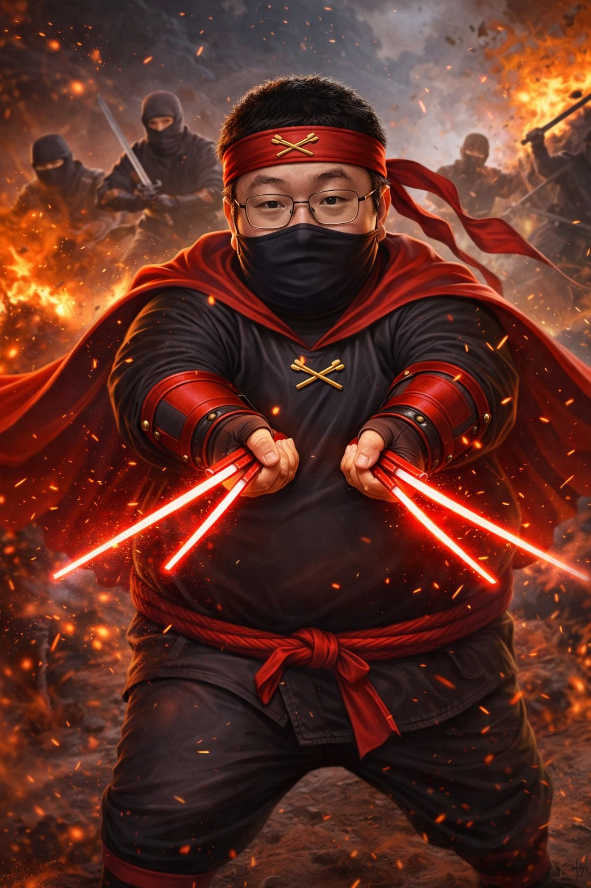
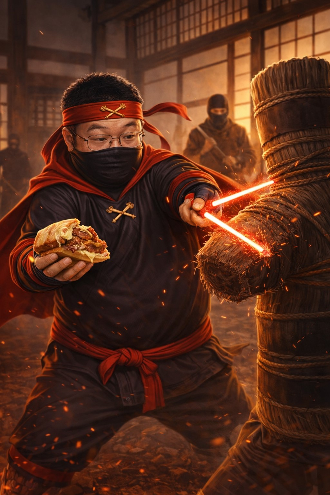
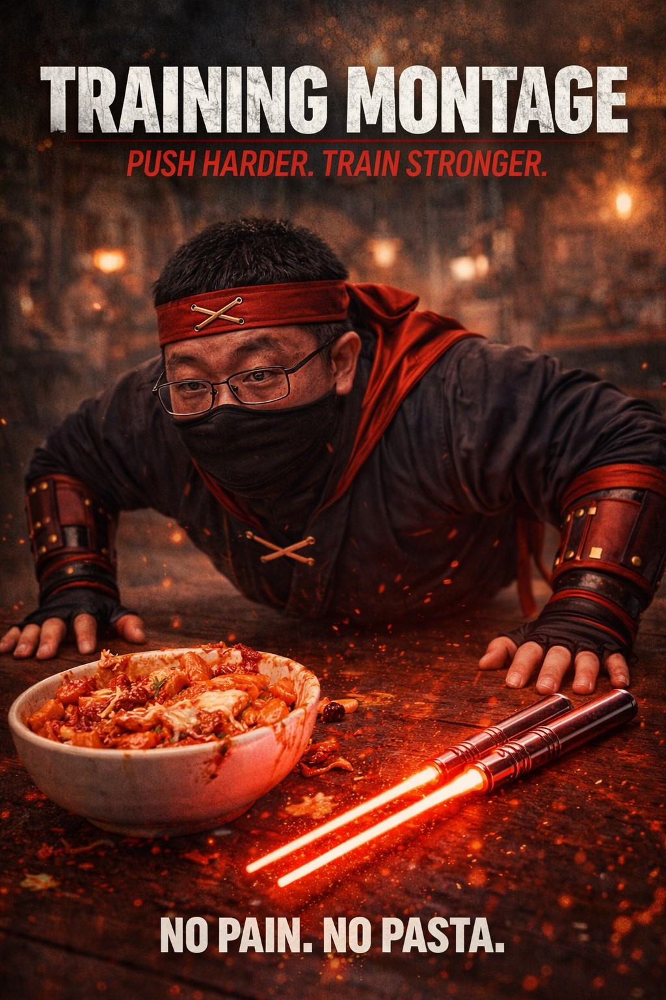
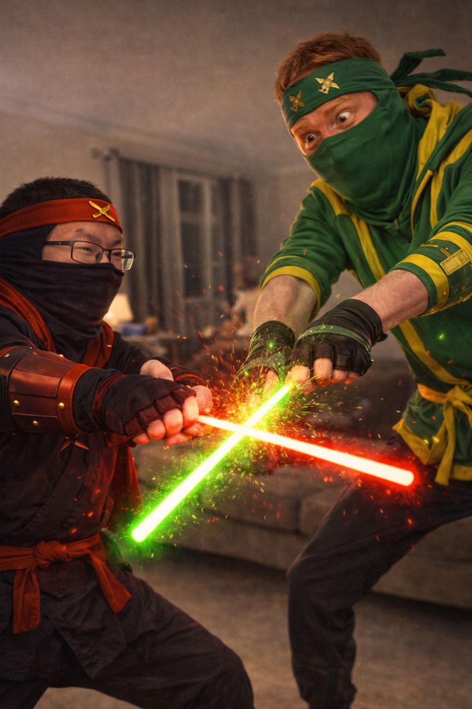
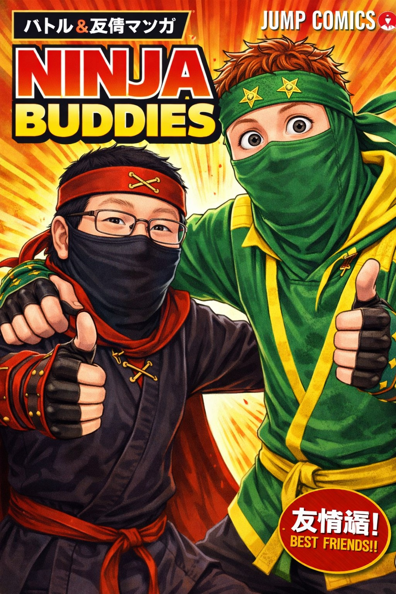

Chronicles
Of Dr. Chopsticks
Feats, Fights & Truly Questionable Life Choices

Episode I: The Battlefield Gourmet
Before the world knew him as the Ziti Samurai, Dr. Chopsticks was a rumor in the smoke—an odd silhouette on distant rooftops, the first and last thing villains saw before their henchmen mysteriously slipped on spilled noodles. In the chaos of neon‑lit battles and midnight ambushes, he moved with surprising grace for someone who always seemed one snack break away from a food coma.
On the great night of the Dumpling Uprising, he stood alone between the city and a legion of deep‑fried chaos. Twin beams of energy crackled in his hands, carving through the dark like chopsticks through steamed buns. When the dust settled, the only things left standing were Dr. Chopsticks… and a single untouched tray of baked ziti in the corner.
Episode II: Training Day (And Night… And Snack Break)

Power without practice is just a very loud way to ruin dinner. Knowing this, Dr. Chopsticks committed to training: not in distant mountains or secret dojos, but in the one place that truly tested his resolve—a cramped bedroom, three inches from the computer and directly beneath a very nervous mother.
He sliced through training dummies, cardboard boxes, and the occasional unlucky coat rack, learning to control the fine line between “perfectly seared” and “unrecognizable ash.” Each swipe of his Energy Chopsticks hummed with purpose: defend the innocent, preserve balance, and absolutely never spill the sauce.

The montage years were brutal: noodles vaporized mid‑air, wooden practice targets cleaved in half, and one truly regrettable incident with a microwave burrito. But through countless missteps and midnight snacks, he forged a fighting style that was equal parts elegance, improvisation, and anime reference.
Episode III: The Lanky Leaf Arrives
Then came the night of the Seven‑Refill Soda Spill, when Dr. Chopsticks first crossed paths with the only warrior who could match his appetite and his flair for the dramatic: a seven‑foot‑tall ginger ninja clad in green and yellow, known only as The Lanky Leaf.
The Lanky Leaf moved like a bamboo stalk in a hurricane—long, flexible, and absolutely impossible to ignore. Their first meeting was not a handshake. It was a flying kick, a deflected chopstick strike, and an argument over who had “dibs” on the last plate of ziti at an all‑night buffet.

Their battle tore through tables, chairs, and at least three “Now Hiring” signs. Yet as their clash reached its peak, both warriors noticed something: the anime playing silently on the TV behind the bar was one of their mutual favorites. A single shared gasp at the season finale twist brought all hostilities to an awkward halt.
Moments later, they were seated side by side, breathing heavily, chopsticks in hand, arguing over power levels and whether a certain protagonist’s plot armor had gone too far. The last plate of ziti was split down the middle with surgical precision. A rivalry had ended. A partnership had begun.
Episode IV: Dorks In Arms
United by their love of anime, over‑analysis, and being unapologetic dorks, Dr. Chopsticks and The Lanky Leaf became an unlikely duo. Where Dr. Chopsticks brought focused energy beams and encyclopedic knowledge of shounen tropes, The Lanky Leaf contributed acrobatic chaos and a suspiciously detailed understanding of obscure filler episodes.
By night, they defended alleyways, buffets, and late‑night diners from culinary injustice. By day, they debated tier lists, traded fan theories, and co‑wrote extremely specific crossover headcanons no one had asked for. The city learned to breathe easier—if only because its villains were too confused to function.

The chronicles of Dr. Chopsticks are still being written: in every new fusion restaurant opening at 2 a.m., in every anime binge that accidentally lasts three days, and in every villain who severely underestimates a hero armed with nothing but glowing chopsticks and an unshakable craving for cheesy ziti.